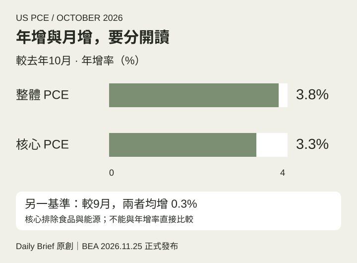

MARKETS / THE ESSENTIALS
美國 10 月 PCE 年增 3.8%，核心年增 3.3%
收錄於 2026-11-26 日報 · BEA官方10月所得與支出新聞稿
發生什麼事
- 美國BEA於25日08:30美東（臺灣21:30）公布10月資料：整體PCE物價指數較去年同月增3.8%，排除食品能源的核心PCE增3.3%；相對9月，兩者均增0.3%。月比與年比回答不同問題，不能放在同一比較尺度。
- 名目個人消費支出月增0.3%，實質PCE則下降不到0.1%；個人所得月增0.7%、可支配所得增0.8%，儲蓄率為可支配所得的4.1%。這是官方估計，不是市場預測值。
影響與限制
- 物價與實質消費的組合關係到利率和成長判讀，投資者需分清報表期間及比較基準。 本期不以單月數據預言下一次Fed決策，也不將公告直接當作美股當日漲跌的唯一原因。

原文與查核
以上為整理與解讀，重要細節請回到原文核對。
- BEA官方10月所得與支出新聞稿 ↗發布 2026-11-25 · 查核 2026-11-26T05:06:36+08:00